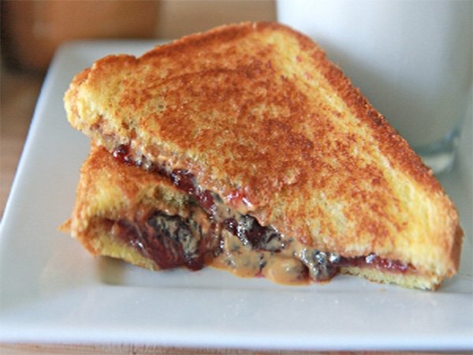

Chronicles Of A Young Mom
Home Page
Grilled Peanut Butter and Jelly Sandwitch

Prep time: 5 min. Cook time: 10 min. Servings: 1
Ingredients:
- 2 slices whole grain bread
- 2 tablespoons butter
- 2 tablespoons peanut butter
- 1-2 tablespoon of jelly or 1-2 tablespoon jam
Directions:
- Spread 1 teaspoon margarine on each slice of bread. On the unbuttered side spread peanut butter on one piece and jelly on the other. Put the peanut butter and jelly sides together.
- Heat a skillet on medium high heat until warm. Put the sandwich in the pan, butter side down. Cook until golden grown then turn and brown the other side. Enjoy.